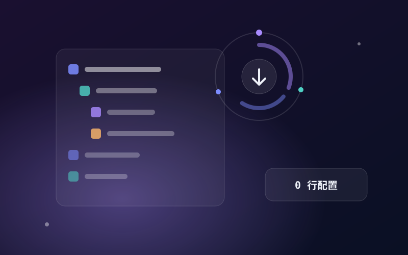
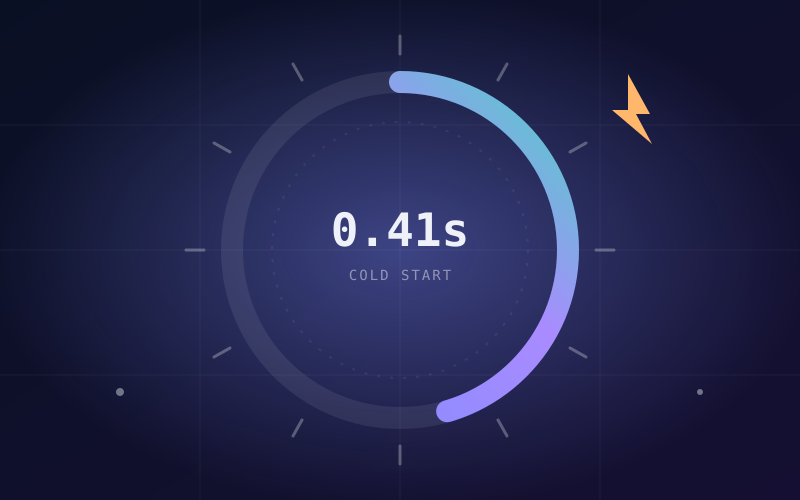
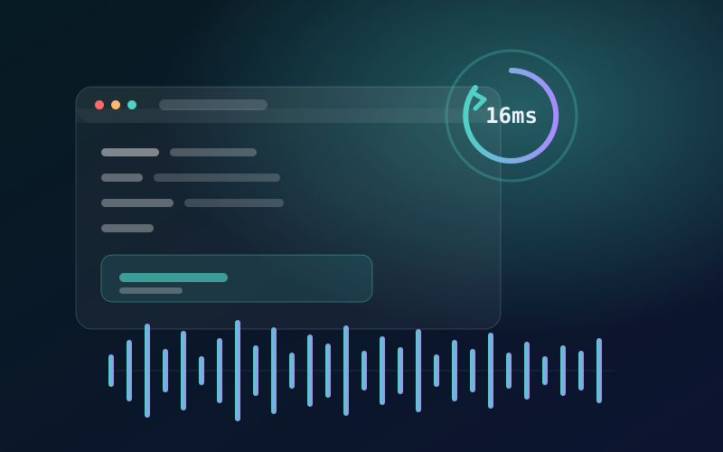
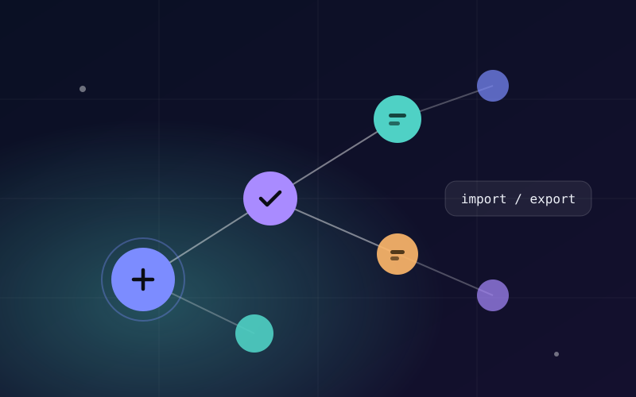
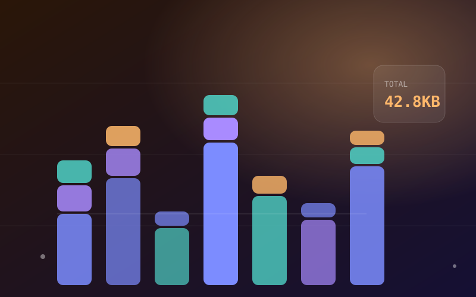
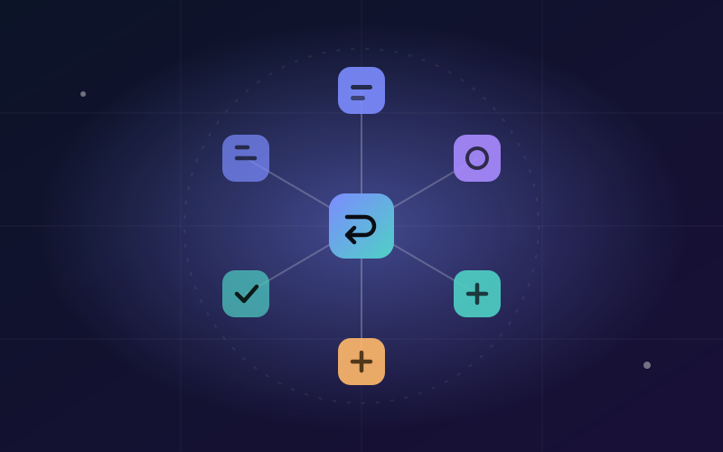

零配置开箱即用
没有 rivet.config.js，也没有需要你手动声明的插件列表。约定优于配置，clone 下来就能跑。
自动探测按需转译
0 行配置即可启动
Rivet 用 Rust 内核重写了构建管线：增量模块图 + 常驻编译守护进程， 冷启动中位 0.41 秒，热更新反馈 16 毫秒。零配置开箱即用， TypeScript、JSX、CSS 全部按需转译。
$ npm i -g @rivet/cli
你只需要写代码。约定、转换、依赖图、HMR —— 全部由 Rivet 自己处理。

没有 rivet.config.js，也没有需要你手动声明的插件列表。约定优于配置，clone 下来就能跑。

Rust 内核 + 常驻守护进程，只重算变更的模块子图。第二次启动直接命中磁盘缓存，几乎零成本。

局部更新而非整页刷新，组件状态自动保留。React Fast Refresh 默认开启，Svelte 与 Vue 也已支持。

严格遵循 import / export 语义，不做路径猜测。构建产物与源码一一对应，树摇更干净、调试更好定位。

rivet analyze 打开火焰图，一眼看出哪个依赖吃掉了体积、哪段转换最耗时。

React、Vue、Svelte、Tailwind、MDX、SWC、Docker 镜像……全部经过官方测试矩阵，可放心用于生产。
在同一个 4200 个模块的中型项目上跑 30 次取中位数，全部跑在 GitHub Actions 标准 Linux runner 上。
| 指标 | Rivet | Vite | webpack | esbuild |
|---|---|---|---|---|
| 冷启动（中位） | 0.41s | 1.24s | 8.60s | 0.72s |
| 二次启动（命中缓存） | 0.08s | 0.31s | 3.40s | 0.19s |
| 热更新反馈（中位） | 16ms | 92ms | 1.20s | 48ms |
| 生产构建 | 11.4s | 18.2s | 42.5s | 6.1s |
| 峰值内存 | 218MB | 512MB | 1.4GB | 96MB |
| 所需配置项 | 0 | 3 | 12 | 2 |
| 产物体积（gzip） | 42.8KB | 47.5KB | 51.2KB | 44.1KB |
左右滑动查看完整对比数据
* esbuild 不支持 HMR 与完整框架插件，因此热更新与配置项一列不参与对比。测试脚本见仓库 bench/ 目录。
不需要先读文档。复制粘贴这三条命令，你的前端服务器已经在跑了。
需要 Node 20 或更高版本。也提供独立二进制，不装 Node 也能用。
$ npm i -g @rivet/cli
交互式选择模板，React / Vue / Svelte / 纯 TS 都可以。
$ rivet init my-app
自动打开浏览器，热更新开箱即用，不需要额外配置。
$ rivet dev
每个插件都是一个独立包，按需安装即可，Rivet 会自动读取并注册。
React 19 与 18 全支持，内置 Fast Refresh 与自动 JSX runtime。
Vue 3 SFC 编译与热更新，支持 script setup 类型检查。
Svelte 5 编译，含 HMR 与 SSR 构建预设。
Tailwind v4 自动探测与扫描，跳过 PostCSS 链路的额外开销。
MDX 编译与热更新，支持自定义组件映射表。
可选的 SWC 后端，大型仓库里能再快 35%。
Rivet 每两周发布一次小版本，每季度发布一次带破坏性变更的大版本。
重写 TypeScript 与 JSX 解析层，转换速度提升 2.4 倍，同时把常驻守护进程的内存占用压到 218MB。
CI 与本地共享同一份构建产物缓存，新同事拉下仓库第一次启动也能在 0.3 秒内进入开发。
提供 rivet/runtime 基础镜像与 Docker、Fly、Vercel 三套一键部署模板，产物默认开启 gzip 与 brotli。
分析模块依赖图，指出可拆分、可并行、可替换的环节，并给出具体的重构建议与预期收益。
两者都在开发期用原生 ESM，但管线内核不同。Vite 依赖 Node 侧的模块图与 esbuild 预构建， Rivet 把整个模块图与转换器都放在常驻的 Rust 进程里，因此冷启动更稳、热更新延迟更低； 代价是 Rivet 目前只覆盖主流前端框架，插件生态规模也小于 Vite。
需要 Node.js 20.6 或更高版本（20.x、22.x、24.x 均在持续测试矩阵中）。 如果你不希望安装 Node，也可以直接下载独立二进制包 —— 它内置了运行时，打包体积约 8MB。
可以。Rivet 提供 @rivet/plugin-webpack-bridge，可以在 Rivet 的开发服务器里复用既有的 webpack loader。 官方建议新项目直接用 Rivet，老项目先在分支上试跑一个迭代再决定是否迁移。
2.x 以来生产构建已经稳定运行，Rivet 官方维护的 40 多个开源项目全部用它出包。 产物遵循标准 ESM 语义，压缩、sourcemap、代码分割与 chunk 命名都可以通过配置覆盖。
插件就是一个导出 definePlugin() 的函数，钩子在转换、加载、解析三个阶段触发， API 文档见 docs.html#plugin-api。最简单的插件只要十几行， 官方也提供了一套 @rivet/plugin-starter 模板。